VR Scene Inspection¶
Add-on VR Scene Inspection này hiển thị và mở rộng các tính năng thực tế ảo sẵn có của Blender trong giao diện người dùng. Tập tính năng này giới hạn ở các trường hợp sử dụng kiểm tra scene. Các trường hợp sử dụng nâng cao hơn có thể được bật thông qua việc phát triển thêm bên trong Blender.
Hỗ trợ VR trong Blender dựa trên đặc tả OpenXR và cần một số bước thiết lập. Các bước này được giải thích trong phần Head-Mounted Displays (HMD).
- Bật Add-on
Mở Blender và đến phần Add-ons của Preferences.
Tìm kiếm "VR Scene Inspection" và đánh dấu chọn ô Enable Add-on.
Giao diện của add-on VR Scene Inspection nằm ở . Các panel và tính năng khác nhau của nó được mô tả trong các phần sau.
VR Session¶

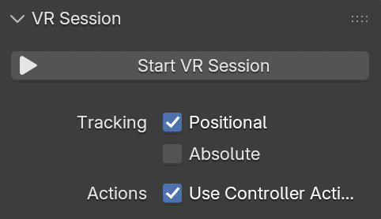
- Start VR Session
Cố gắng thiết lập kết nối tới nền tảng OpenXR để chia sẻ viewport với một HMD.
- Tracking
- Positional
Chỉ theo dõi thay đổi xoay của đầu, không cho phép HMD ảnh hưởng đến vị trí của người xem trong không gian ảo.
- Absolute
Bỏ qua các offset mắt thường được cộng vào để đặt người xem chính xác tại các landmark. Điều này cho phép gốc theo dõi được định nghĩa độc lập với vị trí HMD.
- Use Controller Actions
Bật các hành động controller mặc định cho việc điều hướng viewport, theo dõi controller và phản hồi xúc giác (haptics).
Cài đặt hiển thị¶

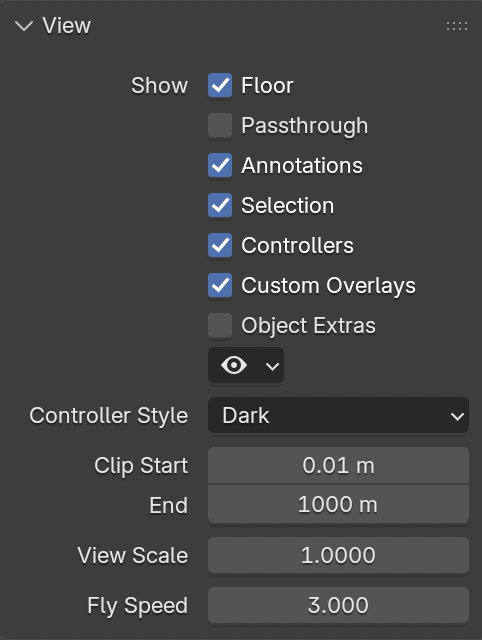
- Show
- Floor
Đặt khả năng hiển thị của mặt phẳng nền trong khung nhìn VR.
- Annotations
Đặt khả năng hiển thị của nét vẽ annotation trong khung nhìn VR.
- Selection
Đặt khả năng hiển thị của viền chọn trong khung nhìn VR.
- Controllers
Đặt khả năng hiển thị của motion controller VR. Yêu cầu bật tùy chọn Use Controller Actions.
- Overlay tùy chỉnh
Đặt khả năng hiển thị của phần vẽ thao tác tùy chỉnh (ví dụ: tia teleport mặc định).
- Object Extras
Đặt khả năng hiển thị của các phần bổ sung của object, bao gồm empty, đèn và camera.
- Khả năng hiển thị Object theo loại
Đặt khả năng hiển thị của object theo loại.
- Controller Style
Cách hiển thị ưa thích cho motion controller VR.
- Clip Start/End
Giá trị cắt (clip) của khung nhìn VR, giống như trong 3D Viewport.
- View Scale
Hệ số phóng áp dụng lên khung nhìn VR để tinh chỉnh.
- Fly Speed
Tốc độ di chuyển của khung nhìn VR khi bay quanh scene.
Location Scouting¶
Location Scouting cho phép người dùng ghi lại các điểm nhìn của camera và đánh giá cài đặt lens, focus và aperture của camera trong khi đắm mình trong môi trường 3D.
Ghi lại các cú chụp¶
Việc chụp được thực hiện bên trong phiên VR bằng một khung ngắm của đạo diễn ảo, được bật ở .
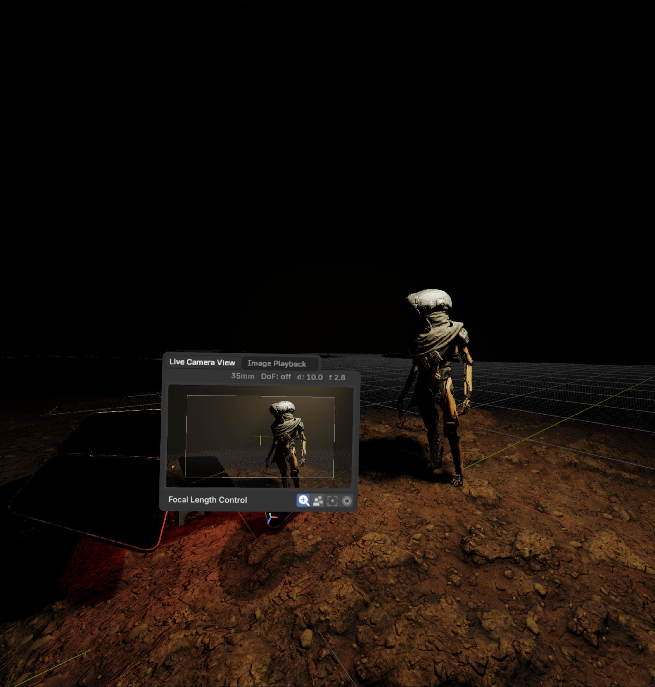 Chụp một cú shot - Scene của Daniel Bystedt.¶ |
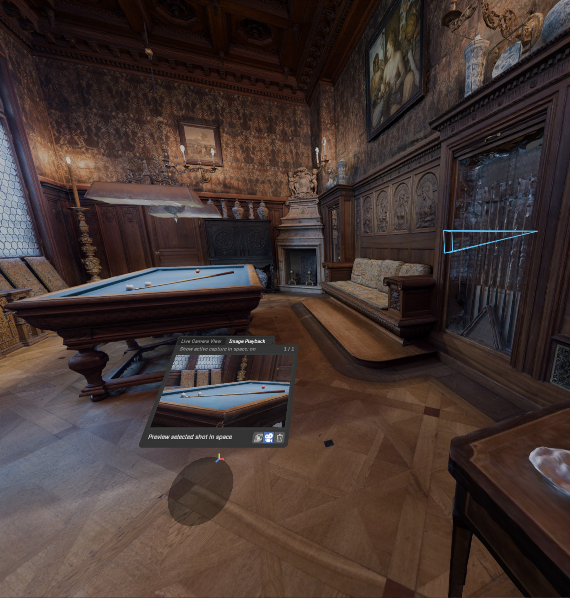 Phát lại một cú shot - Bảo tàng Hallwyl - CC-BY.¶ |


Nhờ Viewfinder, người dùng có thể điều khiển cài đặt camera, chụp các cú shot và phát lại chúng, trong khi vẫn đắm mình trong môi trường VR. Sau khi chụp, các cú shot về sau có thể được chuyển thành camera của scene hoặc marker trong lúc xem xét.

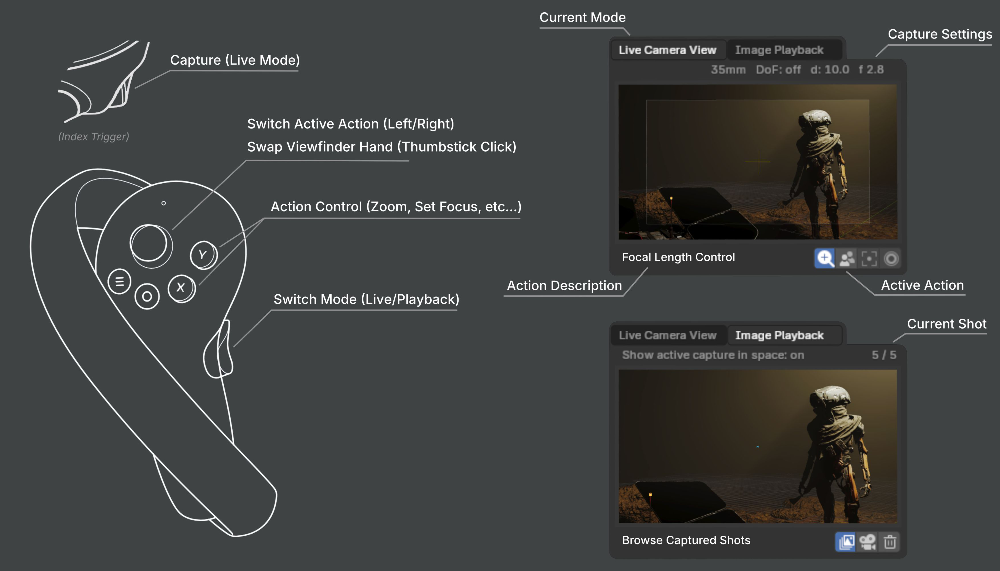
Sơ đồ điều khiển Viewfinder của VR Location Scouting¶
- Các hành động ở chế độ Live
- Điều khiển Focal Length
Tăng / giảm tiêu cự (zoom) theo các bước định sẵn.
- Bật/tắt Depth of Field
Bật / tắt Depth of Field, hiển thị trực quan trong Viewfinder và được lưu vào cú shot đã chụp.
- Đặt Điểm Focus
Đặt điểm focus của Viewfinder bằng cách nhắm vào mục tiêu. Tâm ngắm của Viewfinder sẽ nhấp nháy xanh khi focus thành công và đỏ khi thất bại.
- Điều khiển Aperture
Tăng / giảm tỷ lệ F-Stop (quyết định mức độ làm mờ) theo các bước định sẵn.
- Các hành động ở chế độ phát lại
- Duyệt các cú shot đã chụp
Duyệt các cú shot đã chụp, chuyển sang ảnh chụp tiếp theo / trước đó.
- Xem trước cú shot đang hoạt động trong không gian
Bật / tắt hiển thị ảnh chụp đang hoạt động trong không gian VR dưới dạng lớp phủ camera.
- Xóa cú shot đang hoạt động
Xóa cú shot đang hoạt động. Yêu cầu người dùng xác nhận trước khi xóa.
Xem xét các cú shot¶
Việc xem xét được thực hiện từ sidebar VR Location Scouting trong 3D Viewport desktop. Từ panel này, người dùng có thể xem xét các cú shot, tạo camera và marker từ các ảnh chụp, và chỉnh sửa cài đặt VR Viewfinder.

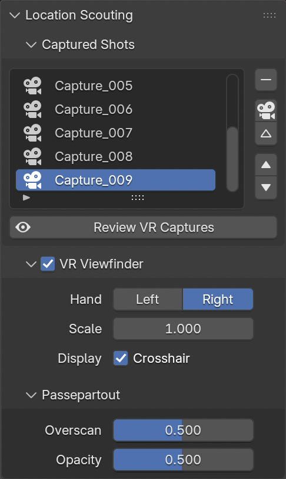
- Danh sách cú shot đã chụp
Một list view.
- Xóa ảnh chụp
Xóa ảnh chụp đang được chọn.
- Thêm Camera từ ảnh chụp
Tạo một camera object mới từ ảnh chụp đang được chọn.
- Thêm Marker từ ảnh chụp
Tạo một marker mới từ ảnh chụp đang được chọn.
- Duyệt các ảnh chụp
Duyệt lên/xuống danh sách các cú shot đã chụp.
- Toán tử Review VR Captures
Toán tử modal này cho phép người dùng xem xét tương tác các ảnh chụp ngay từ 3D Viewport desktop.
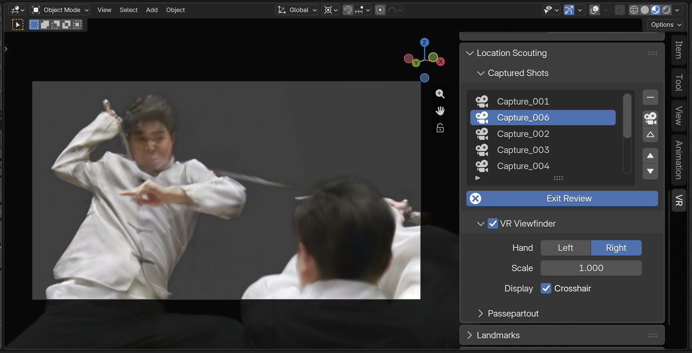
Xem xét một cú shot trong 3D Viewport desktop - Scene của Zhi Wang / Mediastorm + 4DV.ai - CC-BY.¶
Một khi được bật, 3D Viewport sẽ được đặt theo ảnh chụp đang hoạt động. Người dùng sau đó có thể duyệt và chuyển đổi các ảnh chụp bằng Danh sách cú shot đã chụp hoặc bằng các phím điều khiển sau:
Up
Ảnh chụp trước
Down
Ảnh chụp tiếp theo
C
Thêm Camera từ ảnh chụp
M
Thêm Marker từ ảnh chụp
ESC/RMB
Exit Review
Toán tử này không chặn thao tác. Nhấp nút Exit Review hoặc rời khỏi vùng 3D Viewport đang hoạt động sẽ khiến nó thoát.

Cài đặt VR Viewfinder¶

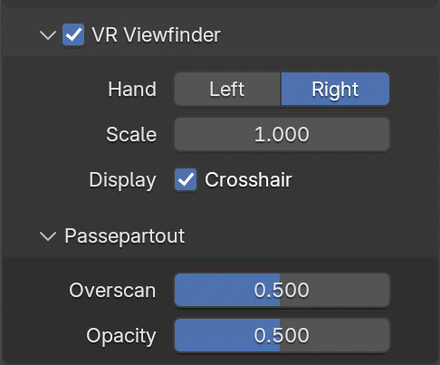
- Bàn tay
Bàn tay trên đó Viewfinder được hiển thị. Cài đặt này cũng có thể được đổi trực tiếp trong phiên VR qua Thumbstick Click của controller.
- Scale
Hệ số co giãn kích thước chiều cao / chiều rộng hiển thị của Viewfinder.
- Hiển thị tâm ngắm
Có hiển thị tâm ngắm của Viewfinder hay không, tâm ngắm này cũng được dùng cho phản hồi Viewfinder Live Action của Set Focus Point.
- Passepartout
Điều khiển lớp phủ tối hiển thị bên ngoài khung hình đã chụp, tương tự như cài đặt lớp phủ passepartout của object camera.
- Overscan
Kích thước viền của lớp phủ passepartout tối.
- Opacity
Độ đục của lớp phủ passepartout tối.
Landmarks¶
Landmark được dùng để lưu các base pose (vị trí và xoay) tái sử dụng cho người xem trong không gian ảo. Ngoài ra, có thể đặt hệ số tham chiếu tỉ lệ cơ bản của người xem cho các landmark kiểu Custom Object và Custom Pose.

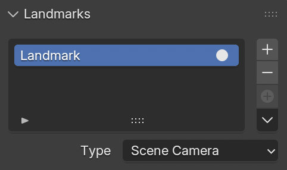
- Danh sách Landmark
Một list view.
Landmark được chọn quyết định cài đặt của landmark nào được hiển thị dưới danh sách. Việc đổi landmark được chọn không ảnh hưởng đến khung nhìn VR.
- Kích hoạt VR Landmark
Kích hoạt một landmark, khiến nó thay đổi base pose của khung nhìn VR.
- Thêm VR Landmark
Tạo một landmark.
- Xóa VR Landmark
Xóa landmark đang được chọn.
- Thêm từ phiên
Tạo một landmark từ pose người xem của phiên VR đang chạy.
- Điều khiển Landmark
- Thêm Camera và VR Landmark từ phiên
Tạo một camera và landmark mới từ pose người xem của phiên VR đang chạy.
- Thêm Landmark từ Camera
Thêm một landmark mới từ object camera đang hoạt động.
- Cập nhật Custom Landmark
Cập nhật landmark đang được chọn từ pose người xem VR hiện tại.
- Đưa Con trỏ tới Landmark
Di chuyển 3D Cursor tới landmark đang được chọn.
- Đưa Scene Camera tới Landmark
Đặt camera của scene tại landmark đang được chọn.
- Tạo Camera từ Landmark
Tạo một camera mới từ landmark đang được chọn.
- Type
- Scene Camera:
Theo active camera của scene để định nghĩa base pose của người xem.
- Custom Object:
Đặt một object tùy ý để định nghĩa base pose của người xem.
- Custom Pose:
Tự tay định nghĩa vị trí và xoay dùng làm base pose của người xem.
Action Maps¶

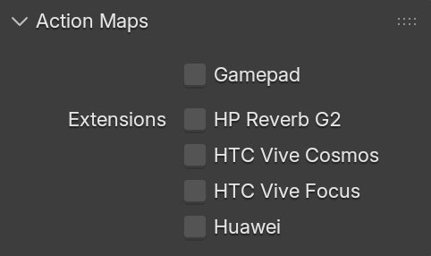
- Gamepad
Dùng đầu vào từ gamepad (Microsoft Xbox Controller) thay cho motion controller cho các hành động VR như điều hướng viewport.
- Extensions
Bật các liên kết controller bổ sung để đảm bảo ánh xạ đầu vào sang hành động chính xác. Lưu ý rằng một extension cho trước có thể không được mọi nền tảng VR hỗ trợ.
- HP Reverb G2
Bật các liên kết cho controller HP Reverb G2.
- HTC Vive Cosmos
Bật các liên kết cho controller HTC Vive Cosmos.
- HTC Vive Focus
Bật các liên kết cho controller HTC Vive Focus 3.
- Huawei
Bật các liên kết cho controller Huawei.
Phản hồi Viewport¶

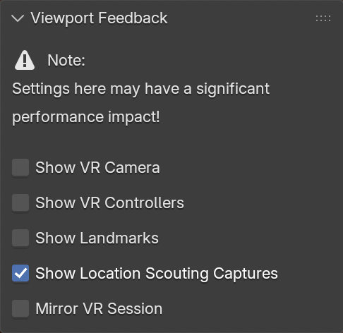
- Hiển thị VR Camera
Vẽ một chỉ báo về pose người xem VR hiện tại (vị trí và xoay trong không gian ảo) trong 3D Viewport hiện tại.
- Hiển thị VR Controller
Vẽ các chỉ báo của motion controller VR được theo dõi trong 3D Viewport hiện tại. Yêu cầu bật tùy chọn Use Controller Actions.
- Hiển thị các ảnh chụp Location Scouting
Vẽ các chỉ báo ảnh chụp của Location Scouting trong 3D Viewport hiện tại. Ảnh chụp đang hoạt động được làm nổi bật.
- Hiển thị Landmark
Vẽ các chỉ báo Landmarks trong 3D Viewport hiện tại.
- Phản chiếu phiên VR
Khiến 3D Viewport hiện tại theo phối cảnh của khung nhìn VR.
Preferences¶
Nằm ở , các cài đặt VR Navigation chỉ xuất hiện khi add-on được bật.

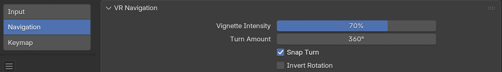
- Vignette Intensity
Điều chỉnh cường độ hiệu ứng vignette được áp dụng khi camera di chuyển.
- Turn Speed
Điều khiển tốc độ quay của camera khi quay liên tục.
- Turn Amount
Đặt góc xoay áp dụng cho mỗi bước khi dùng snap turning.
- Snap Turn
Chuyển đổi giữa quay camera mượt (liên tục) và quay gián đoạn (rời rạc).
- Invert Rotation
Đảo chiều của các điều khiển xoay camera.
Tham khảo
- Category:
3D View
- Mô tả:
Khám phá scene 3D bằng kính thực tế ảo (head-mounted display).
- Location:
- File:
viewport_vr_preview folder
- Tác giả:
Julian Eisel, Sebastian Koenig, Peter Kim, Jonas Holzman
- Người bảo trì:
Jonas Holzman
- Giấy phép:
GPL
- Mức độ hỗ trợ:
Chính thức
- Note:
Add-on này được đóng gói kèm Blender.